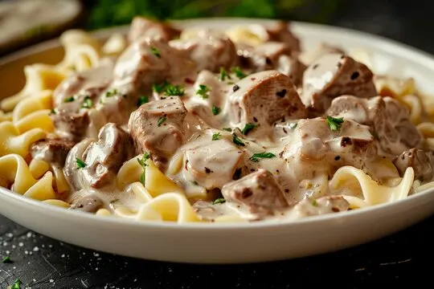

Recipes
Recipe 1: Chocolate Cake
Ingredients:
- 2 cups flour
- 1 cup sugar
- 1/2 cup cocoa powder
- 1 tsp baking powder
- 1/2 tsp salt
- 1 cup milk
- 1/2 cup vegetable oil
- 2 eggs
- 1 tsp vanilla extract
Steps:
- Preheat oven to 350°F (175°C).
- In a large bowl, mix flour, sugar, cocoa powder, baking powder, and salt.
- Add milk, vegetable oil, eggs, and vanilla extract. Mix until smooth.
- Pour batter into a greased baking pan.
- Bake for 30-35 minutes or until a toothpick inserted into the center comes out clean.
- Let cool before serving.
Recipe 2: Spaghetti Carbonara
Ingredients:
- 200g spaghetti
- 100g pancetta
- 2 large eggs
- 50g pecorino cheese
- 50g parmesan
- 2 plump garlic cloves
- 50g unsalted butter
- Salt and black pepper
Steps:
- Cook the spaghetti in a large pot of boiling salted water until al dente.
- Fry the pancetta with the garlic until the pancetta is golden and crisp.
- Beat the eggs in a bowl, then add the grated cheeses and mix well.
- Drain the spaghetti and add it to the pancetta. Remove from heat.
- Quickly pour in the egg and cheese mixture, stirring vigorously.
- Serve immediately with extra grated cheese and black pepper.
Recipe 3: Chicken Curry
Ingredients:
- 1 kg chicken
- 2 onions
- 3 tomatoes
- 2 tbsp ginger-garlic paste
- 1 tsp turmeric powder
- 2 tsp chili powder
- 2 tsp coriander powder
- 1 tsp garam masala
- Salt to taste
- Fresh coriander leaves
Steps:
- Heat oil in a pan and sauté onions until golden brown.
- Add ginger-garlic paste and sauté for a minute.
- Add tomatoes and cook until soft.
- Add turmeric, chili powder, coriander powder, and salt. Cook for a few minutes.
- Add chicken pieces and cook until they are no longer pink.
- Add water and simmer until the chicken is cooked through.
- Sprinkle garam masala and garnish with fresh coriander leaves.
Recipe 4: Beef Stroganoff
Ingredients:
- 500g beef fillet
- 1 onion
- 200g mushrooms
- 2 tbsp flour
- 300ml beef stock
- 150ml sour cream
- 2 tbsp Dijon mustard
- Salt and black pepper
- Fresh parsley
Steps:
- Slice the beef into thin strips and season with salt and pepper.
- Heat oil in a pan and cook the beef until browned. Remove and set aside.
- In the same pan, sauté onions and mushrooms until soft.
- Sprinkle flour and cook for a minute.
- Add beef stock and bring to a boil, stirring constantly.
- Reduce heat and add sour cream and mustard. Stir well.
- Return the beef to the pan and simmer for a few minutes.
- Garnish with fresh parsley and serve.

Recipe 5: Vegetable Stir Fry
Ingredients:
- 1 red bell pepper
- 1 yellow bell pepper
- 1 green bell pepper
- 1 carrot
- 1 broccoli
- 2 tbsp soy sauce
- 1 tbsp oyster sauce
- 1 tsp sesame oil
- 2 garlic cloves
- Salt and black pepper
Steps:
- Cut all the vegetables into thin strips.
- Heat oil in a wok and sauté garlic until fragrant.
- Add all the vegetables and stir fry on high heat for a few minutes.
- Add soy sauce, oyster sauce, and sesame oil. Mix well.
- Season with salt and black pepper to taste.
- Serve hot with steamed rice or noodles.

Recipe 6: Pancakes
Ingredients:
- 1 cup flour
- 2 tbsp sugar
- 1 tsp baking powder
- 1/2 tsp baking soda
- 1/2 tsp salt
- 1 cup buttermilk
- 1 egg
- 2 tbsp melted butter
- 1 tsp vanilla extract
Steps:
- In a bowl, mix flour, sugar, baking powder, baking soda, and salt.
- In another bowl, whisk buttermilk, egg, melted butter, and vanilla extract.
- Pour the wet ingredients into the dry ingredients and mix until just combined.
- Heat a non-stick pan and pour 1/4 cup of batter for each pancake.
- Cook until bubbles form on the surface, then flip and cook until golden brown.
- Serve with maple syrup and fresh fruits.